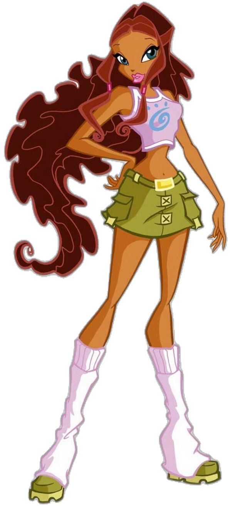
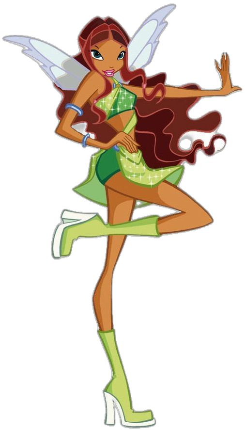
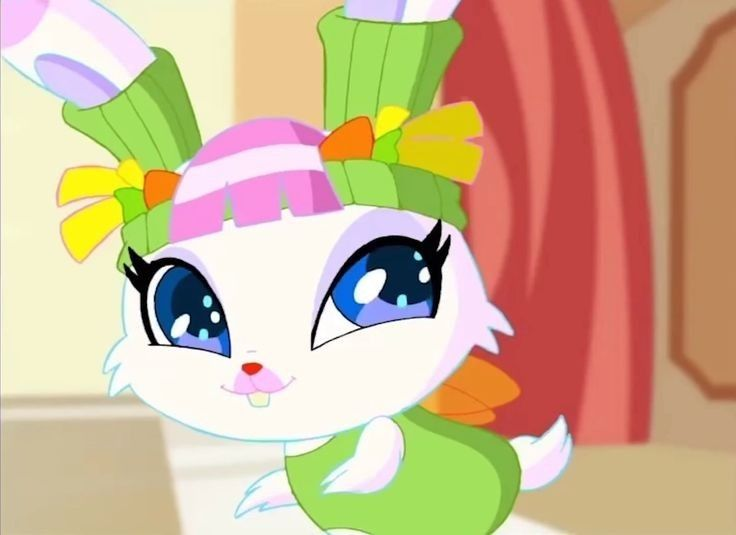

|
 |
 |
Aisha, também conhecida como Layla em algumas versões, é uma das protagonistas de O Clube das Winx e a Fada das Ondas. Ela é conhecida por sua personalidade corajosa, independente, atlética e determinada. Seus poderes estão relacionados aos líquidos e ao Morphix, uma substância mágica que ela consegue moldar de diferentes maneiras.
Aisha nasceu no planeta Andros e é filha do rei Teredor e da rainha Niobe. Ela é uma princesa e possui uma ligação especial com os oceanos e com a magia dos líquidos.
Aisha aparece pela primeira vez na segunda temporada de O Clube das Winx, quando procura ajuda para resgatar as Pixies. Durante essa aventura, ela conhece Bloom, Stella, Flora, Musa e Tecna, aproximando-se do grupo.
Com o passar do tempo, Aisha torna-se uma integrante importante das Winx, participando de diversas missões e demonstrando grande coragem diante de situações perigosas.
Ao longo de suas aventuras, ela enfrenta desafios relacionados à sua família, ao seu planeta e à sua independência. Sua determinação e habilidade física fazem dela uma companheira valiosa para as outras fadas.
Na sua primeira transformação, conhecida como Magic Winx, Aisha manifesta os poderes das Ondas e dos Líquidos, utilizando uma substância mágica chamada Morphix.
O Morphix é uma energia líquida mágica que Aisha consegue moldar em diferentes formas, como cordas, barreiras e objetos. Essa habilidade permite que ela utilize seus poderes tanto para atacar quanto para se defender e ajudar suas amigas.
• Controle do Morphix: Aisha consegue manipular essa substância mágica e moldá-la de diferentes maneiras.
• Criação de barreiras: pode utilizar o Morphix para criar proteções contra ataques.
• Cordas e formas mágicas: consegue moldar o Morphix em cordas, estruturas e outras formas úteis.
• Manipulação de líquidos: seus poderes estão relacionados à água e a outras substâncias líquidas.
• Agilidade e habilidade física: Aisha é uma fada atlética e utiliza sua capacidade física durante as batalhas.
• Voo mágico: como fada, Aisha pode voar utilizando suas asas mágicas.
Na transformação inicial, Aisha apresenta cabelos longos e castanhos, geralmente presos em um rabo de cavalo, asas delicadas em tons de verde e uma roupa característica composta por um top e uma saia curta em tons de verde e azul, além de botas.
Seu visual combina com sua personalidade atlética e determinada, representando sua ligação com a água e com o Morphix.

Milly é a coelhinha de estimação de Aisha. Ela é uma pequena companheira que aparece em momentos relacionados à vida das Winx e seus animais de estimação.
Milly representa o lado carinhoso de Aisha e acompanha a fada em histórias relacionadas às suas aventuras.
Milly é o animal de estimação de Aisha e não deve ser confundida com os Fairy Animals, os animais mágicos associados às Winx em aventuras posteriores.
• Aisha também é conhecida como Layla em algumas versões.
• Ela é a princesa do planeta Andros.
• Seus pais são o rei Teredor e a rainha Niobe.
• Seus poderes estão relacionados aos líquidos e ao Morphix.
• É conhecida por sua coragem, independência e habilidade física.
• Seu animal de estimação é a coelhinha Milly.
• Ela se junta às Winx a partir da segunda temporada.